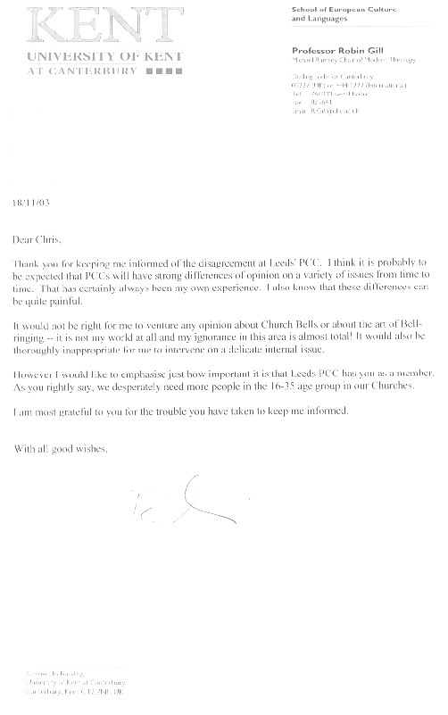
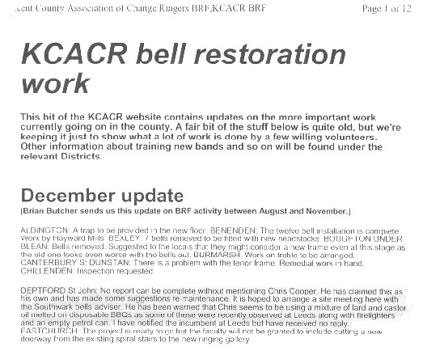
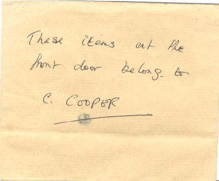
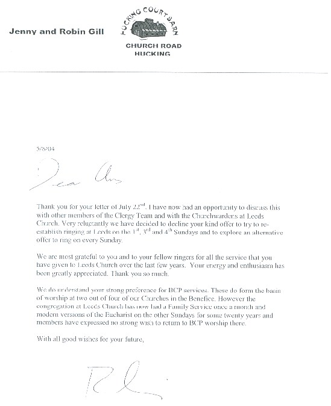

Leeds Youths banished from their Headquarters tower in 2004
for upholding standards and traditions. N.B. This situation was
resolved toward the end of 2006, but this true story is of interest
nonetheless, and it is hoped that lessons have been learned
August 2004: It hath fallen out most unhappily that the Priest-in-Charge at Leeds
one Rev'd Prof. Robin Gill (A senior adviser to the Arch Bishop of
Canterbury) has seen fit to banish the Society from arranging the
ringing in the tower of our lovely old Parish Church.
WHAT REALLY HAPPENED AT LEEDS?

This has been the question on the lips of many people since the sly,
bullying, malicious and disgraceful acts in the run up to, and
aftermath of Friday August 3rd 2004, not to mention the vicious and
selfish removal of the Society's property from the belfry (which
had been placed there during the time of the previous Vicar, Revd.
David Brookes, and with his and the PCC’s full permission and
knowledge) and which, according to Robin Gill - the new Priest-in-charge,
was in no way authorised by the Church. No, that act was the
spiteful doing of Christopher R. Saunders, supported by at least two
comrades, but the Church authorities have failed to punish any of them
for their actions, and have instead REWARDED them, by handing over
control of the bells and belfry to Christopher R. Saunders. Now
why should this have happened?

Well, the situation is that
Rev’d Robin Gill is Professor of Modern Theology at the
University of Kent. And he cannot bear for anyone to challenge
his ‘Authority’. He has displayed this quite clearly
in his entire handling both of this situation, and in his dealings with
other Church Officers. There is a very simple message: We, the congregation, must
all toe the line of the modernising reformers – the modernising
Bishops and Clergy, and woe betide anyone who dissents from this
ethos. For the avoidance of doubt, this ethos requires the Book
of Common Prayer to be discarded as a vehicle for learning and worship,
the 39 Articles of Religion to be abandoned, and the admittance of
female ‘Clerics’ to a profession which scripture speaks
strongly against a female ever holding. Well, the Master of the
Leeds Youths did stray from this Liberal utopia, and the ASELY has, in the short term, paid the price for holding fast on matters of tradition concerning the worship of the Church of England.
The point from which the members of the Liberal hierarchy want to
convince you - the public - that this situation arose was that at which
The Master, upon the Instruction of the Full Members of the ASELY, sent
a letter to Rev. Prof. Robin Gill (Priest-in-Charge at Leeds)
which follows:
22nd July 2004
Dear Robin,
I am sorry that every time I write it must be in a gloomy vein.
However, it has been brought to
my attention that people in the congregation at Leeds have been
'wondering' why there has been no bellringing on Sunday for a little
while.
'Wondering' in the dear old Cof E usually means 'complaining' in my experience.
So, to tell the truth, the
ringers who usually come to Leeds have been more than a little put out
over the acrimonious correspondence about the bells toward the end of
last year, and the 'Inspection' of the bells by the former Diocesan
Bells Adviser. I think they are rather upset that they were not
involved in any consultation process, and like me they feel generally
'let down' by the Church of England, anyway. To add to this, one
of our drivers has a long term depression problem, another is in his
first year of Primary School teaching, and I have begun 'stepping out'
with a young lady from the Ashford Church Choir.
Obviously, all these factors have impinged on our ability to be available for Sunday service ringing recently.
However, as I said at the last
PCC which I attended a couple of months ago; I will be attempting to
arrange ringing again at Leeds: as of September. I have thought
very hard about how I will arrange this, and as some of those who were
formerly involved in Sunday ringing have become disenchanted to the
point where they will not be prepared to put their time and effort into
ringing at Leeds anymore, I shall have to approach some of our other
ringers at Ashford, in the hope that they may join our number.
One thing which we did
appreciate when David Brookes was Incumbent was his rigidity.
Now, we certainly didn't always agree with him, but we did feel that
the whole church set-up was far better organised under his
Incumbency. But moreover, David actually gave us recognition for
the efforts we put into arranging the ringing - whereas no-one thanked
the ringers at the A.P.C.M. this year, and the 1st Sunday timing change
ahs hindered us too.
We all see the congregation
diminishing, and the services (and especially Weddings) becoming more
"inclusive" and dumbed down. We are all traditionalists -
adherers to the BCP doctrine (or in the case of non-believers,
dignified language). All these issues taken together do not
exactly inspire us as a team of ringers. Those of us who believe
in God ring for His glory, and ignore the pettiness of political Church
- but how am I supposed to motivate ringers who don't believe, and see
the squabbling of dumbing down liberals, and think 'This is not for me'?
Anyhow, I think you see the point I am making.
As of September I shall endeavour to arrange the following:
1st Sunday - Ring after service (c. 10:30am)
2nd Sunday - Unable to arrange - my ringing friends are not prepared to 'trek' to Leeds to ring for a 'Family Service'
3rd Sunday - Ring 10:30 - 11am (before service)
4th Sunday - Ring 10:30 - 11am (before service)
I hope this will satisfy
those who have missed the bells - it's a shame that they weren't more
vocal when I was actually able to arrange ringing!
I'm enclosing a very pleasant
letter (copy) I received today from Jonathan Harrison Esq. regarding
the ringing which we did for the flower festival a couple of weeks
ago. It's a shame that the rest of the PCC aren't as polite, and
grateful. I'm sure that when most of the current church
membership of 'riper years' were young, they were derided and held
back, but perhaps they should remember that they are now in an era
where they cannot afford to lose faithful members - and will treat me
accordingly.
Best Thanks to you, Robin.
Chris J. Cooper.
----------------------------------------------------------------------------------------------------------------------
The reply to this letter was received on Saturday August 7th 2004 (the
morning after the Master discovered (at 1:30am!) all of the property
(dumped at approximately 11pm) from the Tower abandoned at his front
door and with the following note, in Christopher R. Saunders’
handwriting:

The letter from Robin Gill:

5/8/04
Dear Chris
Thank you for your letter of
July 22nd. I have now had an opportunity to discuss this with
other members of the Clergy Team, and with the Churchwardens at Leeds
Church. Very reluctantly we have decided to decline your kind
offer to try to re-establish ringing at Leeds on the 1st, 3rd and 4th
Sundays, and to explore an alternative offer to ring every Sunday [which has not happened! - Ed.]
We are most grateful to you and
to your fellow ringers for all the service that you have given to Leeds
Church over the last few years. Your energy and enthusiasm has
been greatly appreciated. Thank you so much.
We do understand your strong
preference for BCP services. These do form the basis of worship
at two out of four of our Churches in the Benefice. However, the
congregation at Leeds Church has now had a Family Service once a month,
and modern versions of the Eucharist on the other Sundays for some
twenty years [not true - BCP Matins was also held occasionally on Sundays during David Brookes Incumbency - Ed.] and members have expressed no strong wish to return to BCP worship there.
With all good wishes for your future
Robin Gill.
----------------------------------------------------------------------------------------------------------------------
Between the Master sending his letter, and the response from Rev. Robin
Gill, no negotiations or responses to the suggestions of the Master's
letter had been entered into by Rev. Gill or any of his clergy
team. As a member of the Church Council, the Master attended the
Church Council meeting in October 2004, and raised the
issue of the dumping of his property by Christopher R. Saunders, and
referred to his behaviour as thuggish. Churchwarden Judge Keith
Simpson then leapt to C.R. Saunders defence and hurled abuse at the
Master. After this, Rev. Robin Gill put the decision (which he
had already made - to dispense with the services of the ASELY) to the
vote. To the credit of two of the Church Council, they abstained
but the rest voted in favour of Robin Gill’s decision. They
could hardly vote against him and face the sort of consequences that
standing against the will of a 'top-dog' in the CofE hierarchy in these
days, entails.
The whole situation had been mismanaged.
What should have happened is that the Churchwardens and Clergy at Leeds
should have arranged a meeting between themselves and the Committee of
the ASELY, and resolved the problems at Leeds which had led to the
disenchantment of the previously very loyal and concientious Full
Members of the ASELY. So here is explained the situation which
began long before the Master’s letter of 22nd July 2004 to Rev Robin Gill. In
fact, it was as a culmination of a very disheartening situation that
the Master had to write in the first place.
LACK OF FAITH IN THE DECISIONS OF THE SOCIETY BY CHURCH HIERARCHY
The ASELY had enjoyed a very successful and fulfilling time at Leeds
under the cure of Rev. Brookes. Following Rev. Brookes’
retirement, it at first appeared that, although the clerical situation
at Leeds would not be perfect, we would all have a good chance to voice
our opinions and help to build on the – by that time –
dwindling congregation. Indeed, the Master wrote a very large and
elegant peal board at the house of the Beadle and Verger Mr Russell,
which recorded a peal rung for Rev. Brookes retirement, and to
celebrate 70 years as Verger for Mr Sidney Russell, and this was
dedicated by Rev Robin Gill at a special Benefice service in September
2004. The Master, Rev. Gill, Rev Norman Dabbs, and Churchwarden
Judge Keith Simpson were photographed after the service in the Church
with the newly dedicated board, which Robin Gill thought at the time
was an excellent creation. This board was then fixed to the
wooden stair enclosure in the belfry with the oral permission of Rev
Gill. Sadly, less than a year later, this board was dumped as
previously mentioned at the Master’s front door.
So what went wrong? Well, in 'marched' the Kent CountyAssociation of Changeringers.
Because of the age of the bells and fittings at Leeds, the ASELY Master had
warned the Church authorities that allowing the bells to be rung on a
whim for each and every ringing group who fancied coming along to
“have a pull” (particularly low standard Quarter Peals
by local visiting ringers) was neither sensible for the ears of the
Parishioners who had to listen to crashing about (something which Rev.
Brookes had supported us on strongly) nor good practice, as it
would increase the wear on the old fittings, which were in a fine
condition at that time thanks to the intensive steeple-keeping by the
Master, but would start to wear out if over-used. Visiting groups
on their tower outings would of course be welcomed, still, but not, as
explained above, those who wanted to take and give nothing back in
return. Order and structure were required, and the Master drafted
a plan of set dates upon which the bells might legitimately be rung
other than Sunday services. The response which the ASELY expected
was one of acceptance that, as the well-established local ringers, the
Church would entrust such decision to us. None of it! Their master plan was to invite the then Diocesan Bell Adviser, Nicholas J. Davies, who bore a personal grudge against the Master,
and against the whole Society, as it refused to be affiliated to his
beloved Kent County Association of Changeringers. This again was
because in the opinion of the ASELY, it encouraged dumbed-down
modernising ways and, very often, low standards of striking. The
report which emerged from the hand of Nicholas J. Davies basically
commended the state of the bells, but then went on to suggest all
manner of inventions about our ‘lighting of the candles in the
belfry chandelier being a fire hazard’ (something which the
Society did not do anyway) and lots of waffle about how the
aforementioned peal board on the wall needed a faculty (though C.R.
Saunders has recently applied to have a peal board of his design
erected in Leeds belfry and that request has been granted as a DE
MINIMIS matter by the Archdeacon, without requiring a faculty).
One rule for one, and another for the other! The report was
designed to subtly belittle the great work which the ASELY had done in
the tower on keeping the bells in good order (which was NOT mentioned
in the report: the bells didn’t look after themselves for 5 years!)
and actually spoke against the use of lard and castor oil for greasing
the bearings (this being THE PROPER TRADITIONAL substance for keeping
the bearings lubricated). At the end of the report, the bell
adviser even had the cheek to submit the following advice :
“Members of the Bell Maintenance and Restoration group of the
Kent County Association have, in the past, made welcome use of Leeds
tower as a training centre, and would be pleased to assist in carrying
out these local measures if so instructed.” This was a
pretty bald attempt to hi-jack Leeds belfry by the KCACR.
Thus, the report went well beyond its remit, and was misleading in a number of ways – yet the Church Authorities chose to ignore and deride
the views of members of ASELY, who had supported the ringing for so
many years, and listen instead to a Bell Adviser of whom they had no
knowledge, and who had a personal axe to grind. Corruption?
Is this a model of how Christianity should be?
Following on from this, it is obvious that Rev. Gill and/or others began to negotiate with Christopher R.
Saunders (who resigned the Captaincy of Leeds belfry in the mid
1990’s after a disagreement with then Vicar, Rev. Brookes, over
C.R. Saunders' and his comrades ringing falling well below the required
standard of striking expected).
So, after C.R. Saunders' reinstatement by Rev. Gill in August 2004, and removal and dumping of my property, well documented (though sometimes inaccurately)
in several Newspapers, and on Local Radio and Local Television, Mr
Saunders' tiny band of followers is dwindling fast. After all,
who wants to support a man who has displayed such spite, venom and
hatred towards the Master of the Leeds Youths, even though this very
Master (during his tenure) unreservedly permitted C.R. Saunders
to arrange funeral ringing for his mother upon Leeds bells in 2003, a
peal in memory of her on the bells in October 2003, and a further
Quarter Peal on the Anniversary of her death, the Master even liaising
with the Choir Mistress to allow this, as C.R. Saunders wanted to ring
the Anniversary Quarter Peal on Choir Practice night. Sadly, Mr
Saunders did not return the compliment in June 2005, when a dear lady
member of the choir died, and the ASELY members having been great
friends with her wished to ring for her funeral. This offer was
declined, and instead a band of those who knew her not, crashed about
on the light 6 bells for upward of half-an-hour.
So, since the initial acts of August 2004, the Master has led a
vigorous campaign with helpful support from other Society members to
retrieve the historic and unique bells and belfry of St Nicholas Leeds,
to their Godly care and monition from the Intruders, and the Society
heartily welcomes all supporters of this cause. When the tower is
eventually returned to our remit – and thus to all Godly
quietness - a day will be set aside as an Anniversary of Thanksgiving,
with a special service based solely on the Book of Common Prayer 1662
Doctrine & Liturgy being formulated for use on that day every year.
As one can see from all the history on this site, Leeds bells
have had an exciting and noble history, and we fully purpose to return
them to the Godly usage for which they are intended, and to preserve
them from the scourge of all wrongheadedness, as we do to purpose also
to save the Church, which, with a Sunday congregation of approximately
15; 4 persons in the choir (including the Master) and an Electoral Roll
of only 33, is indeed at its lowest ebb ever.
Rev. Robin Gill’s activities with regard to Euthansia are also amazing and extremely concerning and are definitely worth reading.
The latest ploy (September 2005) of the hierarchy at Leeds has been to have Mr Russell
removed as Verger from the Parish Magazine, and to claim that he is no
longer Verger. He has been Verger for longer than any of his
detractors have been alive. This attitude is to be depracated in the
strongest possible terms. Mr Russell will be Verger for as long as he
lives, regardless of the assertions of the ignorant and disrespectful.
The fact that he is claimed to have been removed from his post supposedly because he
no longer carries out the duties of Verger is wrongheaded. He would do
so if the Church was in better shape, but his continuing support of the
Master and members of the Leeds Youths was the TRUE reason for his
downfall at that time.
The
Maidstone District ADM held at Leeds on Saturday 8th
October 2005.
The
Emergency Committee met two weeks prior, and at the Master's suggestion
it was resolved that he alone should attend the KCACR ADM at Leeds, and
make proper report back to the Society. The Committee feels that,
with the privelige of holding the Mastership of this Ancient and
Honourable Company comes also the duty and responsibility of the said
Master to defend the honour of the Company with the utmost vigour.
Report
by C.J. Cooper; Master of the Leeds Youths.
The
ringing preceding the meeting should have begun at 3pm, therefore I
arrived at Mr Russell’s (Verger) residence at 2pm, in order that I
should be well prepared to ascend the tower upon hearing the bells
strike up. So I waited…..and waited. Finally at 3:45pm the bells
pulled off and an unremarkable 'touch' of Grandsire Triples was rung.
I ascended the tower at nigh-on 3:50pm just as the 'touch' was coming
round. There were 12 other persons in the belfry (the greatest attendance was 15 and me by about 4:10pm) – mostly from
Staplehurst. The ASELY Master was called
upon to 'call' the
'service touch' (171 Stedman Quators). Well, sadly it
didn’t ‘come round’ as a couple of bells shifted
course, and
the 2ndsomehow
did not want to be ‘in the slow’ when this was the
correct order. Nevertheless, considering the small number of
individuals there, they all tried very hard. I append the musical
touch for the interest of those who would like a simple calling: (From
the 9th) Bob at 1, Bob at 4-5 down. Ring slow work, out and
in Quick. Out to 6-7up and Bob to make it. Bob at 6-7down,
Bob at 4-5 down. In slow and Bob at 2nd blow of 3rd after 1st WT,
then final Bob at 1st blow in 3rd after slow work.
I
noted that some redecoration has taken place in the ringing room.
This is not quite as the Leeds Youths had planned, but it looks tidy
and respectable; though it is to be lamented that the wooden
staircase surround has been painted once more, rather than being
stripped clean to reveal the interesting belfry ‘graffiti’ of the
past couple of centuries, and also unfortunate that the makeshift
boarding on the walls which covers other ‘graffiti’ has been
left in place.
Whatever
Mr Dabbs, one of the current Clergy team, has done in the past, he
must be congratulated on leading a sound Evensong according to 1662
BCP. A pity that the Prayer was mostly extempore, and the lessons taken
from one of those new unpoetical (so called) ‘Bibles’, but
the rest
of the service was pleasing. Mr Dabbs preached an interesting
sermon, in which he gave due credit to Thomas Cranmer - for producing
Evensong in
particular, which Mr Dabbs rightly feels is the "finest service" we
have in the CofE. It was a pity that a choir had not been arranged to
lead the singing which would have allowed us to sing rather than
say the Responses, Psalm, Mag & Nunc (as the ASELY arranged two
years ago when we organised the service for the KCACR
ADM – an all Choral lineup, with Dr Greene’s “Thou
visitest the
Earth”) but then the Priest-in Charge, Robin Gill appears to
think
other things more important than building a good sized congregation,
helping to get people into the choir etc. I could go on but I
won’t.
As
at December 2005, the former Churchwarden (Simpson) had tried to refuse
the request of
the ASELY Master to be reinstated on the Electoral Roll at Leeds.
This was appealed with Deanery Synod, and we awaited the result.
In the event, Rev. Robin Gill agreed to reinstate the ASELY
Master on the Electoral Roll, and, in a further goodwill gesture he
also permitted the use of Leeds Handbells by the Leed Society of
Handbell Ringers in Christmas 2006. Following a change in Churchwarden it is pleasing to report that the
situation in the Church and especially the belfry is now much more
stable once more. ASELY members are encouraged to assist the local
Leeds Society of Ringers and the regular visitors to their Friday
practice.
|
{kind=link}